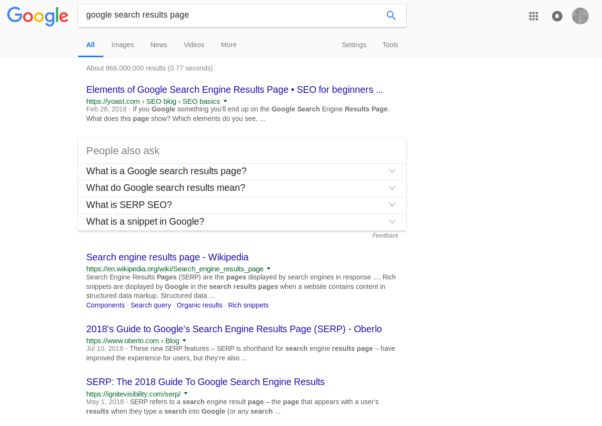
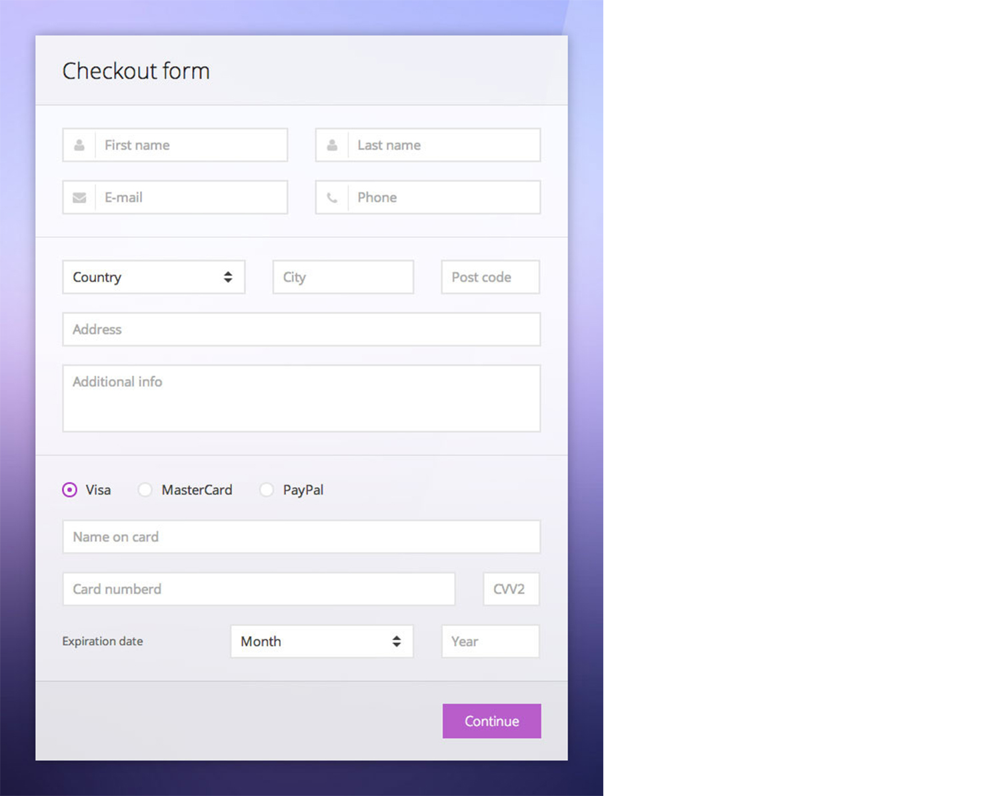

Web Fundamentals Belt Projects
Build this layouts using codepen and send via slack
1
Yes, you have seen it many times. But can you replicate it. The simple google.com page with icons, google’s logo, a text box and two buttons. You can make a look-alike of google.com page. In this project you are making it look like google.com not function like google.com
2
You will create a page with the format of a google search result. Your page should have the normal 10 results and the navigation to next pages at the bottom.
This is an upgrade from the basic google.com page above. However, you should be able to reuse some of the code on this project.
Also,make the page should look somewhat but the functionality should not be a concern right now.
3 - Build a Technical Documentation Page
When you click on any topic on the left, it loads that content on the right

4
These Projects